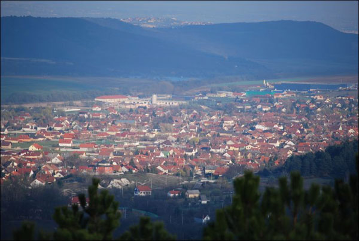

Pilis-vörös
Pilisvörösvár (németül: Werischwar) város a budapesti agglomerációban, Pest vármegyében, a Pilisvörösvári járás székhelye. Budapesttől 18 kilométerre északnyugatra, a 10-es főút és a Budapest Esztergom-vasútvonal mentén található. A városban lakik arányait tekintve hazánk jelenlegi egyik legnagyobb lélekszámú német kisebbsége. 2011-ben a népszámlálási adatok alapján a 13 667 lakosból 3 804 fő tehát a teljes népesség megközelítőleg 28%-a a német nemzetiségi közösség tagjának vallotta magát.